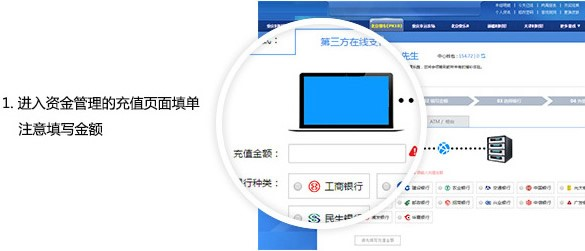
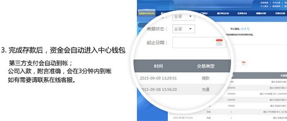

-
如何存款
存款时填对附言并转对金额者一般可在我们收到款项后的25秒内自动到账；
没填附言或者金额填错的存款不仅没有任何手续费，存款到账时间也至少需要1~3分钟；
若出现没自动到账者请根据以下步骤操作并等待到账，无需联系客服，以免耽误您宝贵的时间；【金额不对】
请到充值页面再填写一个与您实际汇款金额相同的单子，并1~3分钟内刷新中心钱包；
【附言错误】
忘记填附言或附言填写错误，请在1~3分钟内刷新中心钱包查看是否到账；
【不是自己的卡存的】
请将您的具体存款姓名，存款金额，存款时间，存款银行通过 在线客服 联系我们，并在1~3分钟内刷新中心钱包；
☆注意：
附言是指在银行转账时，将六位阿拉伯数字（不包括中文）填在备注处；
由于以上个人原因操作失误导致存款失败或到账时间慢者，彩63概不负责。



注意：在转账的时候一定要填写正确的附言，填写正确后您的款项将在1分钟内到账，否则将无法到账。
存款常见问题
没有网银怎么进行充值？
选择充值页面的ATM存款选项，根据页面提示的卡号信息到柜台或ATM进行存款，存款后通过站内信 、或者在线客 服办理即可。
每天的存款限额是多少？
第三方在线支付：单笔最低100元，最高以每个第三方标准，10万--100万不定，可多次存款；
ATM/柜台方式 ：单笔最低100元，最高20万元，可多次存款。
（返还手续费按当地银行实际扣除为准）
转账附言是什么？为什么一定要填？
填写充值金额并获取存款卡号的时候，我们会提供六位数数字给您。在您通过网银转账时，除了准确金额和转账账户
以外，请一定要在备注/附言/捎句话等处填上这六位数字，否则无法自动到账。
存款了不到账怎么办？
【金额不对】
填单时金额与实际存款不符的，请到充值页面重新填写与您实际汇款金额相同的单子即可；
【附言错误】
若是忘记填附言或者附言填错了，请在1~2分钟内刷新您的中心钱包刷新金额是否到账即可。请下次存款一定要转对
金额以及填对附言，否则不仅没有手续费，存款也将无法到账。
存款至旧的银行卡账户怎么办？
每次存款前请获取最新的银行卡账户，存至旧的银行卡账户我们恕不负责。
存款一般需要多久到账？
只要您在转账时填写正确的附言，款项1分钟可到账，跨行用户请使用跨行快汇才能极速到账。
-
如何提款
彩63彩票网致力为会员提供最优质的服务,7×24小时随时提款，不限金额。不需要支付任何费用。提款方法如下：
会员登入后点选「存款提款」，选择「在线提款」。
并确认提款人姓名与您绑定的银行帐号持有人相符，第一次提款如未先绑定请到「会员资料」页面中绑定。
输入「取款金额」以及「提款密码」，然后提交，稍等片刻工作人员收到申请核对无误后马上转入您的银行账户。
目前公司支持银行卡提款方式，不支持支付宝、财付通提款。
取款须知
1 、银行账户持有人姓名必须与您绑定时输入的姓名一致，否则无法到账。
2 、大陆各银行帐户均可申请提款。
3 、每个账户24小时无限制申请提款。
4 、买彩后未经全额投注提彩申请不予受理。
5 、每位客户只可以使用一张银行卡进行提款，如需要更换银行卡请与客服人员联系。
6 、为保障客户资金安全，有可能需要与您电话联系验证或其它资料验证，以确保客户资金不会被冒领。
到账时间？
本站24小时均可申请提款，提款三分钟内到账，提款不收取任何手续费
-
关于我们
彩63彩票网于2010年成立，专业经营各项博彩业务，现与AK平台合作，推出高频彩票现金投注网，开种广东快乐十分、重庆时彩、北京快乐8、北京赛车PK10等项目，完全自助注册开户， 现金开户， 现金投注。我们拥有稳定的平台，成熟的玩法，简单的下注流程、以及优质的客户服务。彩63彩票网公司为彩票博彩爱好者提供最优惠的赔率和最优质的博彩服务。彩63彩票 网一直深受会员好评，一直以来以良好的信誉和服务得到许多会员的支持和肯定，接受业界各行业与会员的监督！如您对本公司有所疑惑，欢迎您对本公司的监督。彩63彩票网为正派且稳 健经营的网站，一直以最优惠的赔率和优质的服务深受会员好评，请放心进行投注，如您之前不了解本公司，欢迎您对本公司进行关注。
菲律賓執照
我們提供的所有產品和服務，是由菲律賓政府卡格揚河經濟特區 First Cagayan leisure and Resort Corporation. www.firstcagayan.com 所授權和監管。這是一家位於Cagayan特 別經濟區和自由口岸 (CSEZFP)的機構，並且是互動遊戲的授權者及管理者。
安全与保密：
我们采用了目前最好的加密技术（1024位RSA密钥交换和 448位blowfish）和防火墙系统保护你的安全、私隐，并保证你享受公平的 游戏。客户在本平台的所有动均严格保密，我们不会向 第三方包括政府透露客户资料。所有银行交易由国际金融机构在高标准的安全 和机密的网络中进行。进入玩家帐户资料也必须有玩家唯一的登录ID和密码，确保客户的资金安全有保障。 彩 63彩票网拥有高素质的客户服务，无论在处理任何事情上，都以简单和快捷享誉全球。如免费开户，即时存款，实时QQ,MSN回复客户的询问以及处理客户的难题等。 彩63彩票网全年24小时 运营，全天候处理客户出入款等相关事宜，严格训练的客服团队，以专业、亲切的态度著称，尽速解决您对于网 站、游戏的种种疑难杂症，不但让所有客户皆有宾至如归的感觉，同时我们以 业界前所未见的各种优惠方式回馈我们的客户，绝对是您最明智的选择！
-
常见问题
一般常见问题
Q1: 如何加入彩63？
A1: 您可以直接点选 "立即开户"，填写真实资料后，即可成为彩63会员。
Q2: 我可以直接在网络上存款提款吗？
A2: 可以，彩63提供多种线上存款选择，详情请参照 "存款提款"
Q3: 我在哪里可以找到游戏规则？
A3: 在游戏视窗中,右上角有"游戏规则"选项，让您在享受游戏乐趣的同时，清楚告诉您游戏的玩法、规则及派彩方式。
Q4: 单注投注额最低是？
A4: 我们单注最低投注额为人民币1元.
Q5: 最高投注额有限制吗？
A5: 任何一家正规博彩和网络博彩公司对客户的帐户投注都有单注和单注限额，没有限额的公司都基本属于没有任何风险控制的私人或骗子公司， 今天的控制是为了明天能保证100%提款给您，这点您可以自行分析。每个项目都有不同的限额设定，详细请登陆会员都在「会员资料」页面查看。
Q6: 我帐户里面的注单怎麽结算？
A6: 登陆会员账号，点击会员中心页面查看，「今天已结」按天显示每天的结算结果，点击进入查看今天所下注每一笔情况。
Q7: 如果忘记登陆密码怎麽办？
A7: 联系24小时线上客服人员咨询协助提供相应信息给客服。系统将重置一个新密码给您登陆，建议用户登录后立即修改密码。
Q8: 当忘记提款密码时怎麽办？
A8: 你可通过24小时线上客服人员协助处理。
Q9：如何修改真实姓名？
A9：真实姓名一旦注册无法进行修改，请重新注册会员
-
联系我们
彩63的客服中心全年无休，提供1周7天、每天24小时的优质服务。
如果您对本网站的使用有任何疑问，可以通过下列任一方式与客服人员联系，享受最实时的服务 点击在线客服链接或添加客服QQ，即可进入在线客服系统与客服人员联系！
客服QQ：599000063
客服QQ：799000063
彩63真诚欢迎大家，并以公平、公正、公开、诚信经营的理念服务大家！